Luigi Website
HOME
CONTACTS
CERTIFICATE
GALLERY
ABOUT ME
CURRICULUM VITAE
CERTIFICATES
1.Certificate of completion (SPES) (2018)
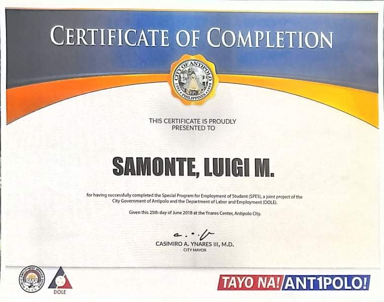
2.Certificate of completion jr high school (2018)

3.Certificate of Participation (2017)
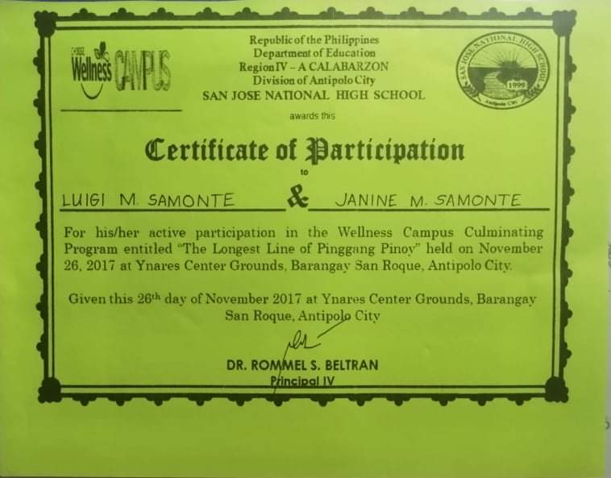
4.Sertipiko ng pagkilala (2017)
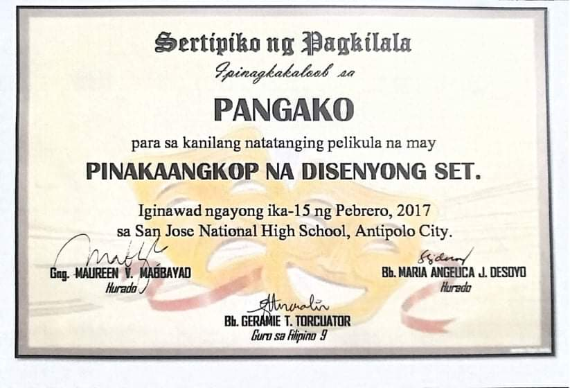
5.Certificate of recognition (2016)
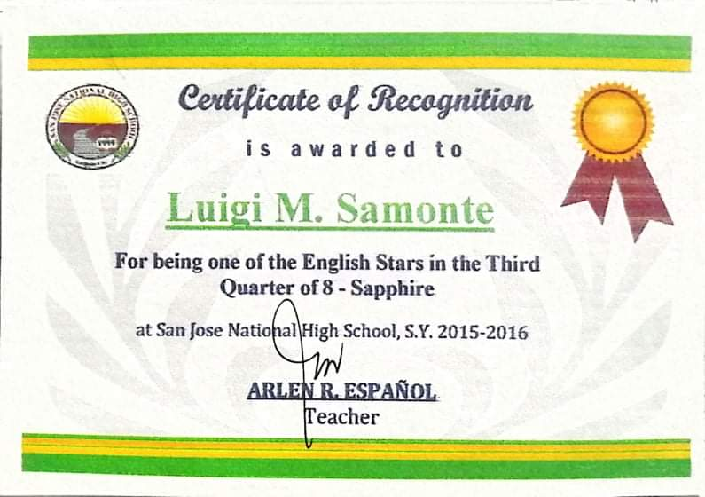
5.Sertipiko ng Pagkilala (2014)
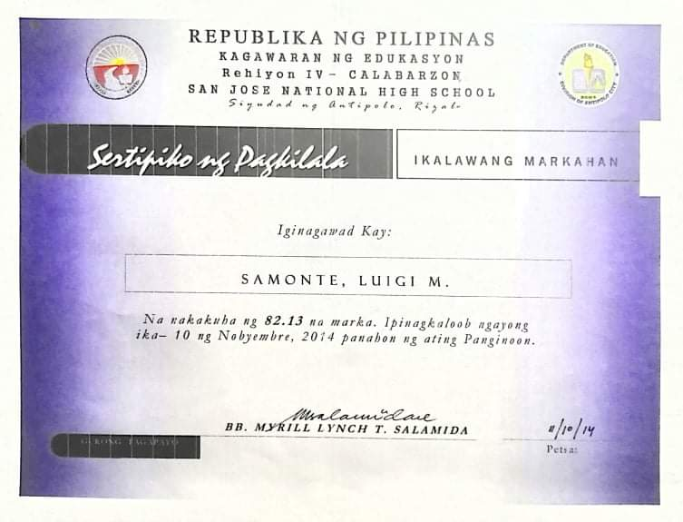
6.Certificate of Participation Antipolo Band no.12 (2014)
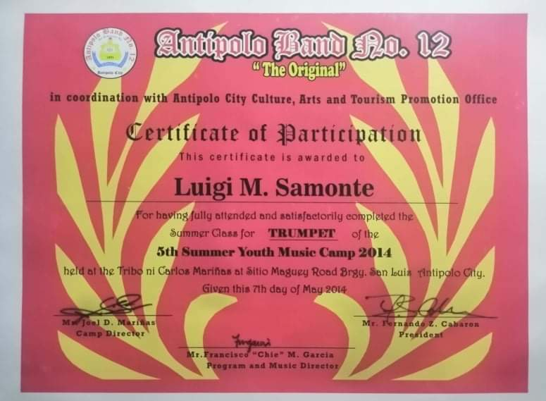
7.Certificate of Recognition Drum and Lyre Band (2014)
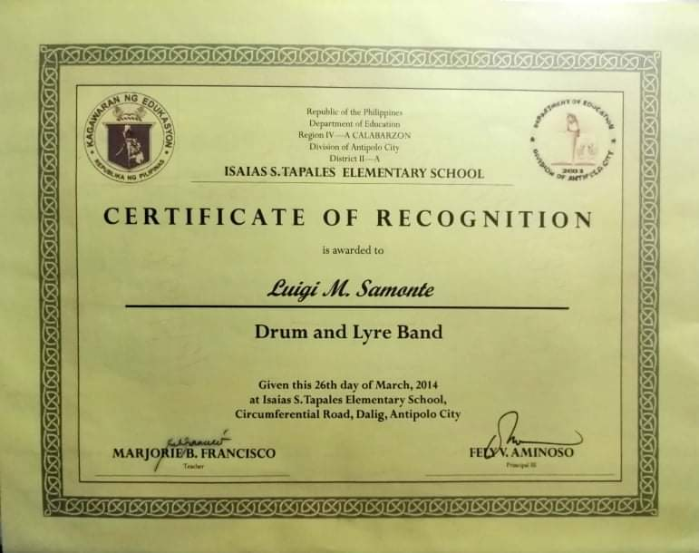
8.Certificate of Recognition (2014)
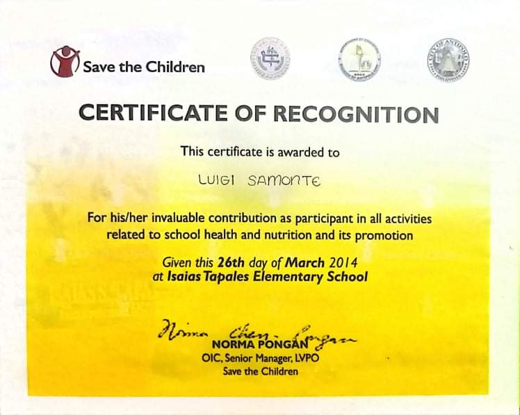
9.Certificate of Recognition (2013)
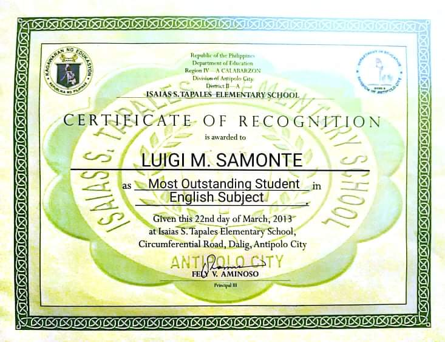
10.Certificate of Participation (2011)
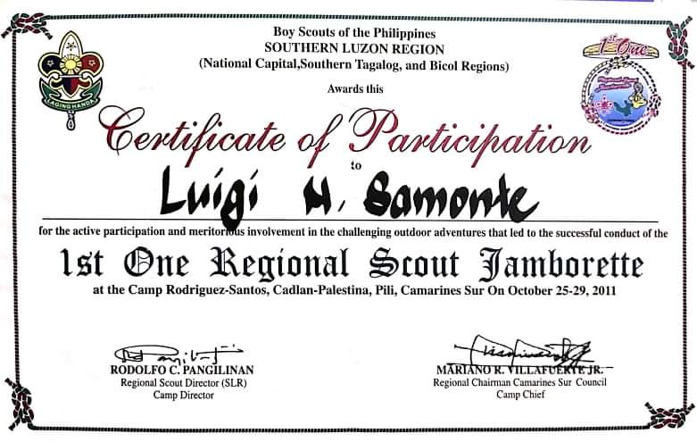
11.Certificate of Participation (2010)
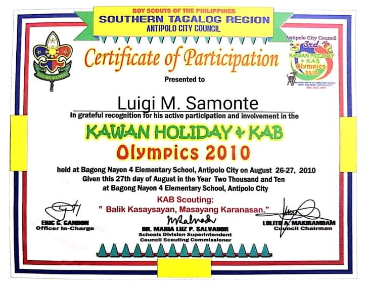
12.Sportmanship Award (2010)
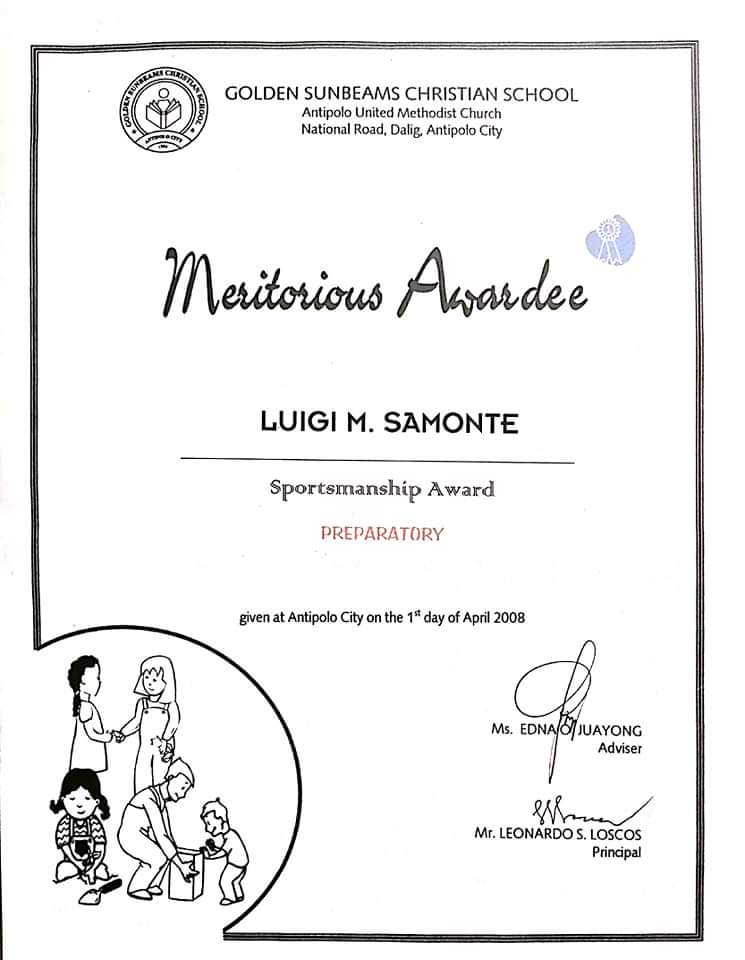
© Luigisamonte2020